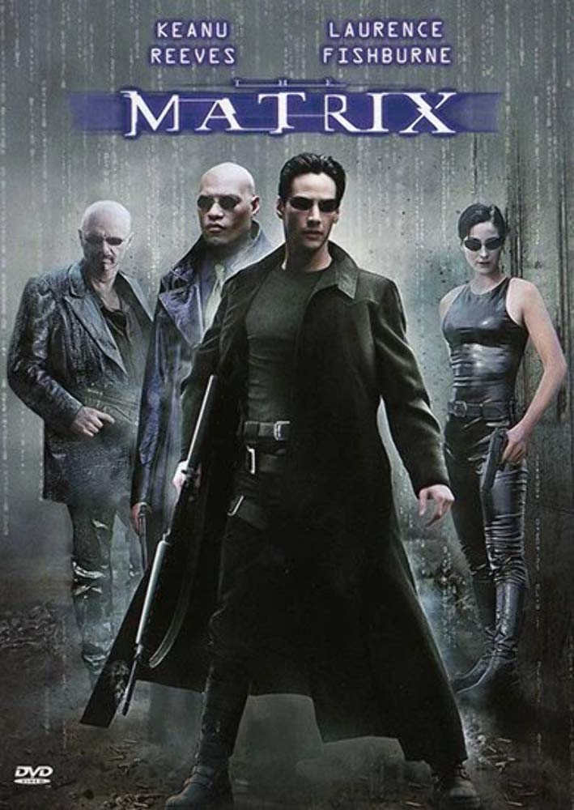
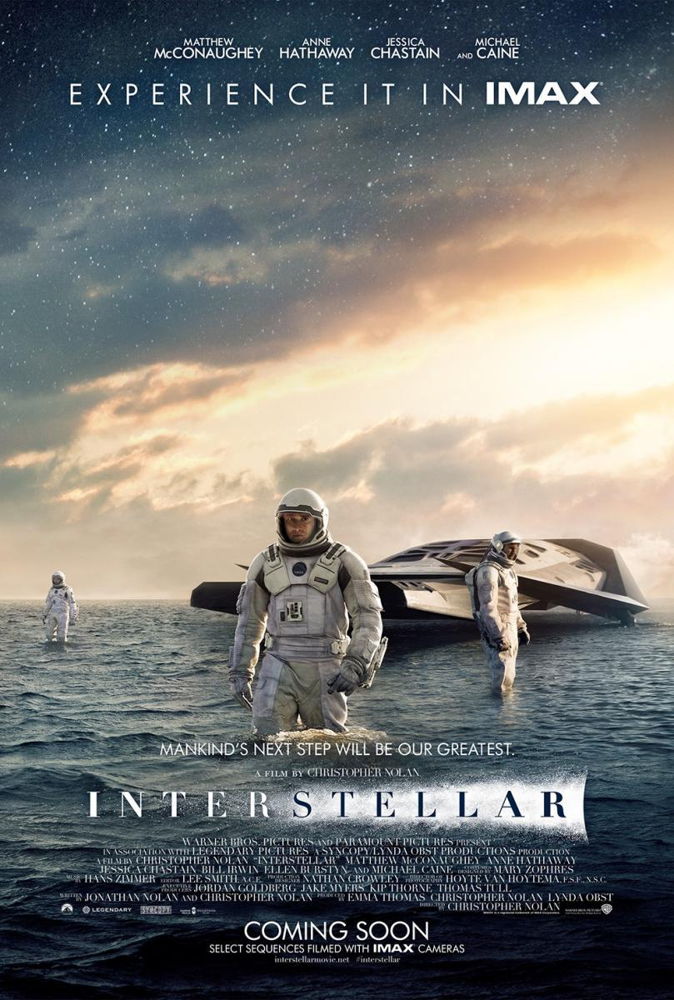
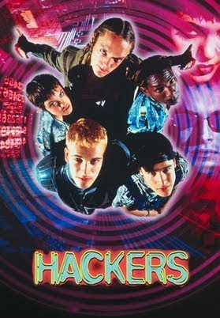
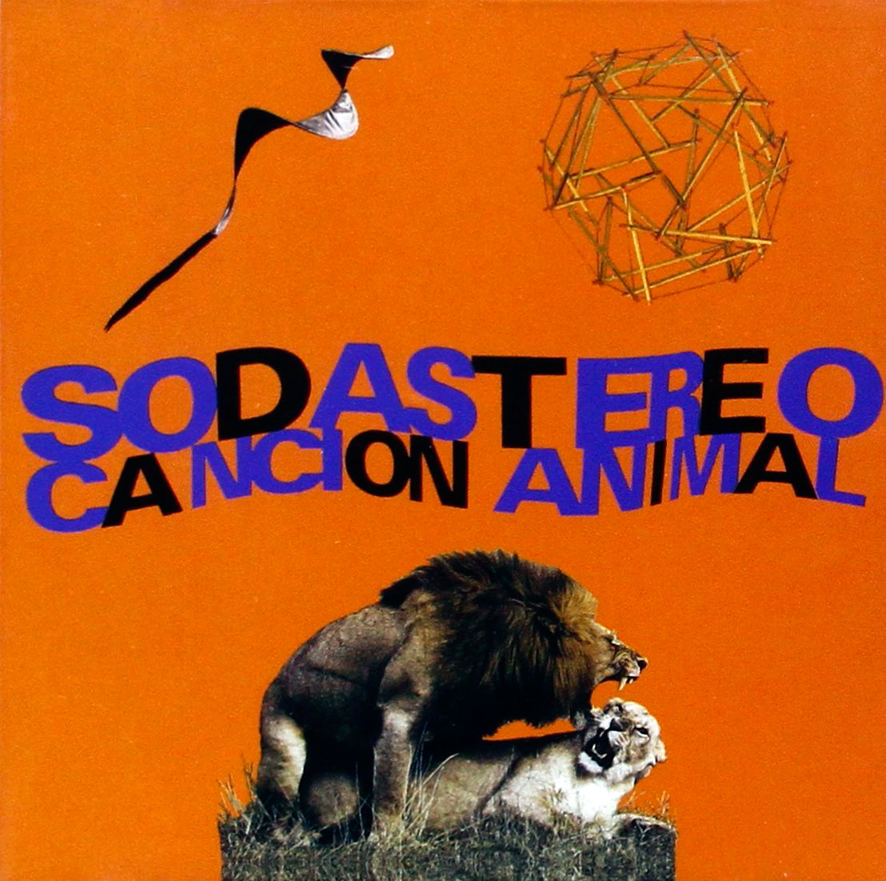
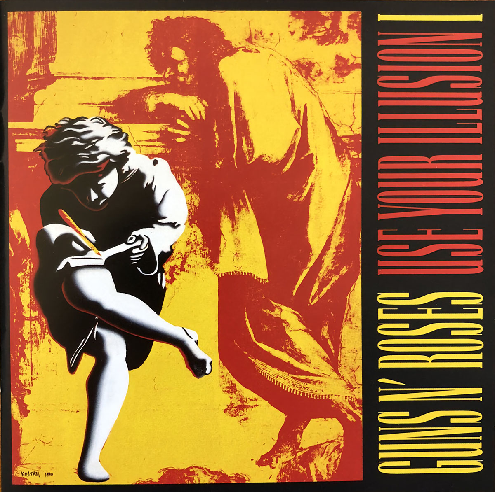
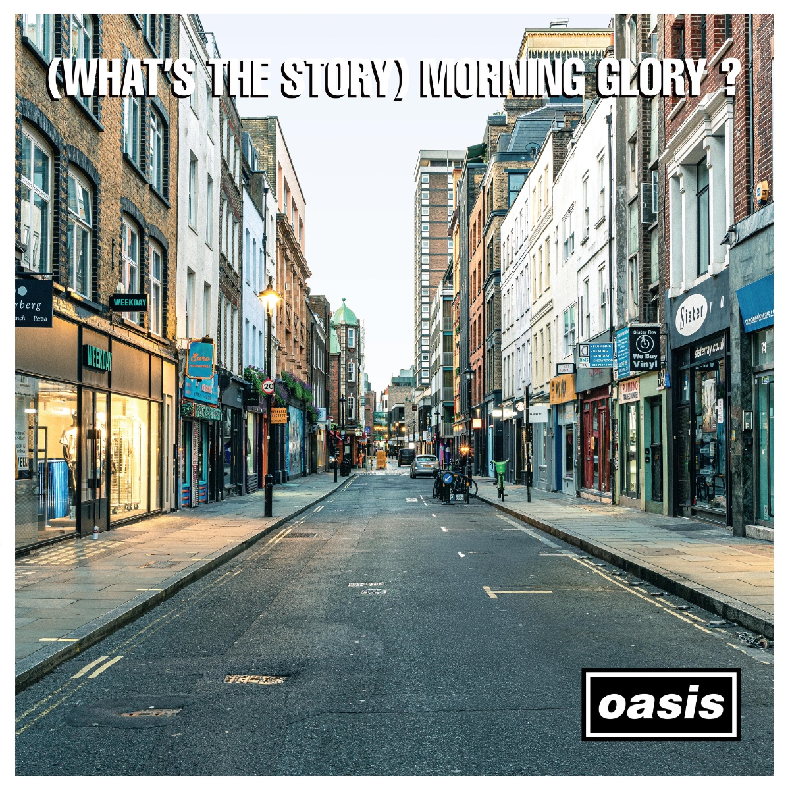

Adrian Javier Cano
IA Multiagéntica & CiberseguridadHabilidades
- IA Multiagéntica
- Ciberseguridad
- Derecho Informático
- IA y Derecho
- HTML5
- CSS3
- JavaScript
- Git & GitHub
- Uso e Integración de IA
- Metodologías Ágiles
- Resolución de Problemas
Películas Favoritas
Hacé clic o presioná Enter sobre un cuadro para girarlo y conocer su historia.

The Matrix
Hermanas Wachowski · 1999The Matrix
Un hito que revolucionó los efectos visuales y la filosofía en el cine. Nos invitó a preguntarnos qué es real y cuál es el precio de la libertad frente a los sistemas de control.
«No hay cuchara.»

Interestelar
Christopher Nolan · 2014Interestelar
Una odisea científica y emocional inolvidable. La relatividad del tiempo, los agujeros negros y la certeza de que el amor trasciende todas las dimensiones.
«No te vayas dócil en esa buena noche.»

Hackers
Iain Softley · 1995Hackers
La estética noventera de la informática en su máxima expresión. Un grupo de jóvenes piratas informáticos enfrentándose a una conspiración corporativa.
«Hack the planet!»
Portadas de Discos Favoritos
Hacé clic o presioná Enter sobre cualquier portada para ver la reseña en su dorso.

Canción Animal
Soda Stereo · 1990Canción Animal
Un antes y un después en el rock latinoamericano. Guitarras potentes, sonido crudo y canciones himno como «De música ligera» y «Té para tres».
«Nada más queda...»

Use Your Illusion I
Guns N' Roses · 1991Use Your Illusion I
Potencia y virtuosismo puro. Baladas monumentales como «November Rain» y la energía arrolladora de Axl Rose y Slash en su pico creativo.
«'Cause nothin' lasts forever, even cold November rain.»

(What's the Story) Morning Glory?
Oasis · 1995Morning Glory?
El disco definitorio del britpop noventero. Melodías directas al corazón, actitud desenfadada y clásicos como «Wonderwall» y «Champagne Supernova».
«Don't look back in anger, I heard you say.»
> DIRECCIÓN IP DEL NAVEGANTE:
> Conexión de red: ESTABLECIDA CON LA MATRIX